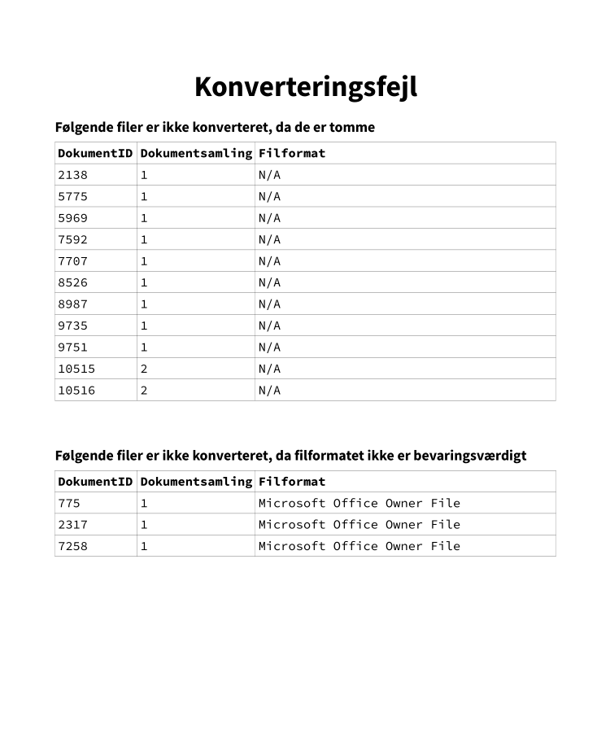

Symphovert¶
Symphovert er en CLI (Command-Line Interface), som benyttes til at konvertere filer, således de overholder Aarhus Stadsarkivs arkiveringskrav. Der læses fra DB-filen produceret af Digiarch.
Installation¶
Symphovert skal installeres via releases på GitHub. Download først den seneste .whl-fil, og installér herefter denne via pip.
Eksempel
pip install --user C:\Downloads\symphovert-0.2.1-py3-none-any.whl
Bemærk
Installation via .whl-filer kræver, at pakken wheel er installeret. Dette skal kun foregå første gang man har behov for at installere wheels, og det gøres som følger.
pip install --user wheel
Når Symphovert skal opdateres, bruges igen pip med en ny .whl-fil og --upgrade.
Eksempel
pip install --user --upgrade C:\Downloads\symphovert-[new version]-py3-none-any.whl
Forudsætninger¶
Symphovert gør brug af IBM Lotus Symphony. Det er vigtigt, at installationslokationen tilføjes til brugerens PATH-miljøvariabel på lige fod med LibreOffice. Den typiske sti er C:\Program Files (x86)\IBM\Lotus\Symphony.
Opbygning¶
Symphovert er en CLI, og skal derfor benyttes direkte i for eksempel PowerShell. CLI'en er opbygget som følger.
symphovert [OPTIONS] [ARGS] [COMMAND]
Argumenter, optioner, og kommandoer er beskrevet i det følgende.
Argumenter¶
Symphovert har to inputargumenter, som begge er påkrævede: FILES og OUTDIR. FILES skal angive stien til den files.db fil, der tidligere i processen er genereret af Digiarch, mens OUTDIR skal angive stien, hvori de konverterede filer skal gemmes.
Eksempel
symphovert D:\filer\AVID.AARS.3.1\_metadata\files.db D:\filer\out [COMMAND]
Symphovert genererer selv en mappe baseret på AARS-ID'et, og det er derfor kun nødvendigt at angive en overordnet folder i OUTDIR.
Optioner¶
Symphovert har to optioner, der, som navnet antyder, ikke er påkrævede:
--helpprinter hjælp--versionprinter versionen af Symphovert
Bemærk, at Symphovert ikke har en --threshold-option. Dette er fordi det forventes, at der sker relativt mange fejl i konvertering med Symphovert, og det derfor bedst giver mening bare at lade den forsøge.
--help og --version kan som de eneste kaldes uden at angive argumenter, da de blot giver information om selve CLI'en.
Eksempel
symphovert --help
symphovert --version
Kommandoer¶
Symphovert har pt. én kommando kaldet main. Denne kommando konverterer filer til Aarhus Stadsarkivs prædefinerede Master-formater. Disse er blandt andre Open Document Text for alle Word-lignende filer, PDF/A for PDF-filer, og TIFF for billedfiler.
Eksempel
symphovert D:\filer\AVID.AARS.3.1\_metadata\files.db D:\filer\out main
I fremtiden skal Symphovert også kunne håndtere konvertering af alle Master-filer til arkiveringsformater, således der kan genereres juridiske afleveringer. Dette bør være en separat kommando.
Konvertering¶
Når Symphovert sættes i gang med at konvertere, er der ikke umiddelbart behov for yderligere brugerinput. Konvertering tager i gennemsnit 20s/fil.
Bemærk
Symphovert-konvertering er en særdeles ustabil proces. Det anbefales at væbne sig med tålmodighed, og man skal være forberedt på at skulle køre konverteringen flere gange. Åbn altid IBM Symphony før en konvertering, da en kold start for programmet er meget langsom.
Vigtigt
Det er ikke muligt at bruge den computer, Symphovert kører på, samtidig med konvertering, da Symphovert overtager både mus- og tastaturinput.
Under konvertering skriver Symphovert til tabellen _ConvertedFiles i den files.db, som Symphovert læser fra. I files.db laves også et såkaldt view, _NotConverted, der på brugervenlig vis angiver de filer, der endnu ikke er konverteret. _ConvertedFiles-tabellen ser ud som følger.
_ConvertedFiles
| column | required | type | description |
|---|---|---|---|
| file_id | true | int |
Fremmednøgle til Files-tabellen |
| uuid | true | str |
Universally Unique ID 4 |
_NotConverted-viewet baserer sig på _ConvertedFiles og Files. Det ser ud som følger.
_NotConverted
| column | required | type | description |
|---|---|---|---|
| id | true | int |
ID fra Files-tabellen |
| uuid | true | str |
Universally Unique ID 4 |
| path | true | str |
Fuld sti til filen |
| aars_path | true | str |
Sti med rod i AARS-mappen |
| puid | false | str |
PRONOM ID |
| signature | false | str |
Filsignatur |
| warning | false | str |
Advarsel, hvis relevant |
I afsnittet om fejlrettelser beskrives det, hvorledes _ConvertedFiles manuelt opdateres, hvis der er behov herfor.
Under konvertering skrives også til en logfil, symphovert.log, der kan findes i _metadata folderen under OUTDIR\AARS-ID.
Eksempel
Antag, at originalfilerne D:\filer\AVID.AARS.3.1 bliver konverteret som følger.
symphovert D:\filer\AVID.AARS.3.1\_metadata\files.db D:\filer\out main
_ConvertedFiles og _NotConverted kan nu findes i databasefilen D:\filer\AVID.AARS.3.1\_metadata\files.db, mens logfilen kan findes i mappen D:\filer\out\AVID.AARS.3.1\_metadata.
Fejlrettelser¶
Under konvertering kan fejl opstå. Faktisk er det mere eller mindre garanteret ved konvertering med Symphovert. Fejl opdages ved at kigge i symphovert.log-filen, hvori de vil stå som WARNING. Når et job er afsluttet, skrives også en oversigt over antallet af fejl til sidst i log-filen.
Eksempel
I det følgende ses et uddrag af en symphovert.log-fil. Succesfuld konvertering angives med INFO, fejl angives med WARNING, og til slut ses en oversigt over antal fejl.
2021-02-25 19:25:48 INFO: Starting conversion of file.lwp
2021-02-25 19:25:55 INFO: Converted file.lwp successfully.
2021-02-26 09:19:16 INFO: Starting conversion of file_2.lwp
2021-02-26 09:19:36 Failed to convert file_2.lwp: Conversion of file_2.lwp failed!
2021-02-26 19:25:55 INFO: Finished conversion of 11438 files with 15 issues.
Alle fejl i konvertering med Symphovert er kritiske. Det anbefales at køre konverteringsjobbet et par gange, og til sidst lave eventuelle manuelle rettelser. Hvis filen ikke kan åbnes i Symphony, kan man med fordel prøve i LibreOffice - nogle gange er outputtet herfra acceptabelt.
Når filer konverteres manuelt, er det vigtigt at opdatere _ConvertedFiles-tabellen, således man bevarer oversigten over, hvilke filer der er konverterede. Dette gøres ved at indsætte den manuelt konverterede fils ID og UUID, som vist i følgende eksempel.
Eksempel
Antag, at en fil med ID 6 og UUID 1bac98f5-156c-4a8d-813c-39ac559b3e93 ikke er konverteret. Den fremgår i _NotConverted som følger.
| id | uuid | path | aars_path | puid | signature | warning |
|---|---|---|---|---|---|---|
| 6 | 1bac98f5-156c-4a8d-813c-39ac559b3e93 | D:\files\AARS.TEST\file.lwp | AARS.TEST\file.lwp | fmt/340 | Lotus WordPro Document |
Filen konverteres nu manuelt, og `_ConvertedFiles opdateres med følgende SQL-statement.
INSERT INTO _ConvertedFiles VALUES (6, "1bac98f5-156c-4a8d-813c-39ac559b3e93")
Herefter fremgår filen ikke længere i _NotConverted-viewet.
Til tider kan filer ikke konverteres, fordi de viser sig at være korrupte eller på anden vis fejlbehæftede. Alle filer, der ikke kan eller skal konverteres, skal noteres i et dokument kaldet "Konverteringsfejl", og herudover skal en TIFF-fil, der forklarer den specifikke fejl, bruges som erstatning for den konverterede fil. Disse erstatningsfiler kan findes her. Til slut skal dette dokument gemmes som TIFF og fremgå i kontekstdokumentationen. Skabelonen til dokumentet kan findes her.
Eksempel
Dokumentet "Konverteringsfejl" kan se ud som følger. 